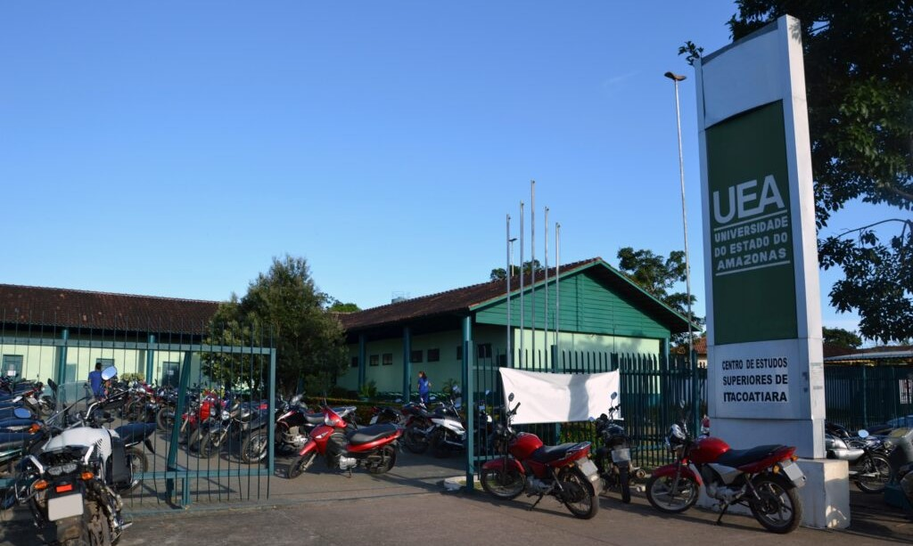

Moysés Banarrós Israel

A Doação do Terreno para a UEA - CESIT em Itacoatiara
A doação de uma área significativa por Moysés Benarrós Israel foi um marco no desenvolvimento educacional de Itacoatiara e no fortalecimento do ensino superior no interior do Amazonas. Na década de 1990, o empresário, conhecido por seu comprometimento com o progresso social e educacional, destinou o terreno que possibilitou a implantação do Centro de Estudos Superiores da Universidade do Estado do Amazonas (UEA) na cidade. Essa contribuição visionária transformou o acesso ao ensino superior para os moradores da região e dos municípios vizinhos.
A iniciativa foi liderada pelo então governador do Amazonas, Amazonino Mendes, que determinou a construção do centro, concretizando um sonho de ampliar a presença do ensino superior público no interior do estado. Em setembro de 2002, foi inaugurado o Centro de Estudos Superiores de Itacoatiara (CESIT), um espaço que desde então se tornou um ponto de referência para a educação superior e para a formação de profissionais construídos.
O CESIT oferece cursos em diversas áreas estratégicas para o desenvolvimento do Amazonas, incluindo licenciaturas e engenharia que atendem às necessidades da região. A presença da UEA em Itacoatiara não apenas ampliou as oportunidades educacionais, mas também trouxe resultados positivos para a economia e a sociedade local. Com professores altamente capacitados e uma estrutura dedicada, o centro tem desempenhado um papel essencial na formação de líderes e profissionais para o futuro do estado.
A doação de Moysés Benarrós Israel é um exemplo claro de como a filantropia e a visão de longo prazo podem transformar comunidades inteiras. O terreno que ele cedeu não apenas possibilitou a construção física do CESIT, mas também simbolizou o compromisso com a democratização do ensino superior e com a promoção da igualdade de oportunidades para a juventude do interior. A decisão de apoiar a UEA reforça o legado de Moysés como um dos grandes incentivadores do desenvolvimento humano e educacional na região amazônica.
Hoje, o CESIT não é apenas uma unidade acadêmica, mas também uma prática de transformação social. A instituição continua a crescer e impactar positivamente a vida de centenas de estudantes que encontram no ensino superior uma oportunidade de construir um futuro melhor. A visão e o altruísmo de Moysés Israel permanecem presentes, inspirando novas gerações a acreditar no poder da educação como instrumento de mudança.